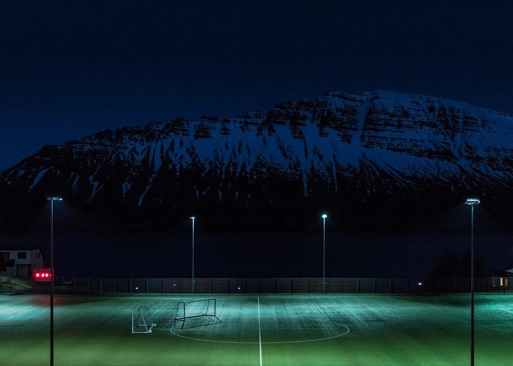
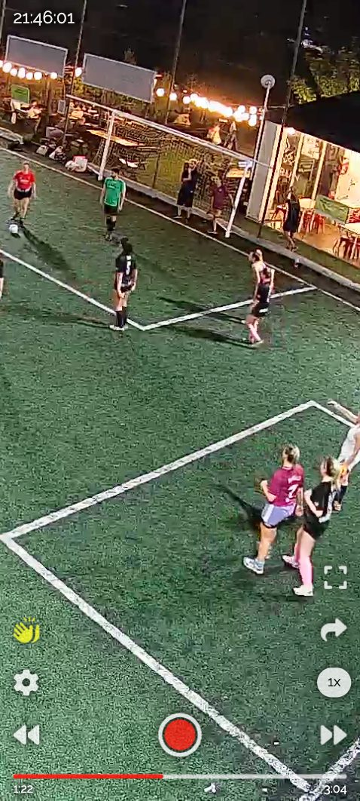
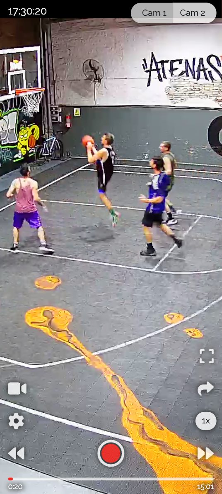
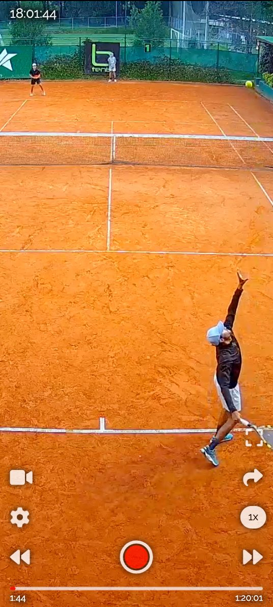
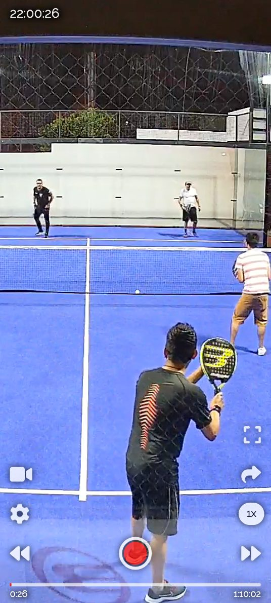
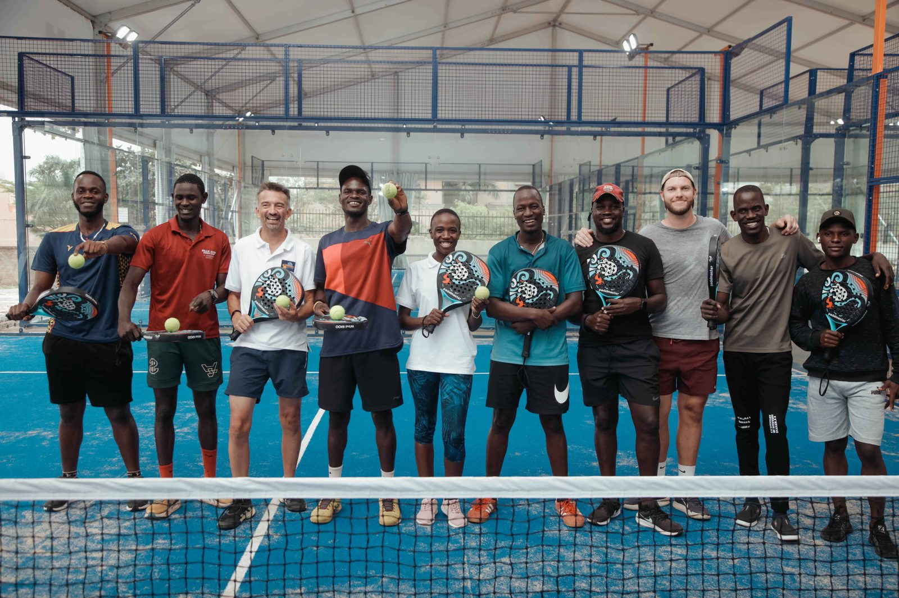

Un software se copia en tres meses. Una audiencia de 150.000 personas y 20.000 partidos por día, no. Esta propuesta convierte esa ventaja en algo que el predio pueda ver, medir y no querer perder.
Beelup creó una categoría que no existía y hoy la lidera. Estos son los números que salieron de la reunión del 28 de septiembre, y son el punto de partida de todo lo que sigue.
Un crecimiento del 50% sobre el cierre de este año. No es una meta de marketing: es la meta comercial que define si esta propuesta sirve o no.
Aparecieron alrededor de 30 competidores. Uno con unos 100 clientes; el resto con 15 o 20 predios. Con IA, cualquiera arma un software que grabe un partido.
Cuando deje de hacer falta enviar el kit, la barrera de entrada baja para Beelup y también para todos los demás. La diferencia va a tener que estar en otro lado.
Beelup tiene control de ocupación, buscador inteligente de jugadas, resumen automático con IA y un reproductor con edición por voz, zoom y cámara lenta. La competencia tiene una cámara que graba. Y aun así, la conversación con el predio termina en precio.
Pasa porque todo eso son funciones, y las funciones se enumeran igual en cualquier presupuesto. El predio compara dos PDF y ve dos servicios que graban partidos: uno a $85.000 y otro a la mitad, sin factura. Para defender, Beelup termina bonificando entre 25% y 40%.

El producto real de Beelup. Lo que se ve acá es exactamente lo que ningún competidor de 15 predios puede igualar — y lo que hoy no llega al dueño del predio en el momento en que decide.
Esta propuesta no arranca de cero: arranca de lo que Beelup ya intentó. Lo que sigue no son supuestos nuestros, son resultados que nos contaron. Cada uno cierra una puerta y abre otra.
Se le entregó contenido listo a 1.000 clientes. Lo subieron 10. No es falta de ganas: la mayoría de los dueños no está digitalizada y no tiene quién le mueva las redes.
Se sortearon seis meses de servicio sin cargo entre los predios. Tampoco alcanzó. Ni siquiera usan el control de ocupación, que les ahorra plata directa.
Se filmaron, se recoparon, se publicaron y hasta se les puso pauta. Es el formato que mejor respuesta tuvo del lado del predio. Nunca se sistematizó.
La acción con Doble Mérito —jugaban un partido y les mostraban sus jugadas— daba clips a bajo costo. El programa dejó de existir y el formato se perdió con él.
Todo lo que falló tenía la misma forma: le pedía algo al dueño del predio. Publicar, compartir, participar, activar. Todo lo que funcionó tenía la forma contraria: lo ponía en pantalla sin que tuviera que hacer nada.
Entonces el sistema que proponemos corre con el predio quieto. Beelup produce, Beelup publica, Beelup nombra. El predio recibe exposición, y el único esfuerzo que se le pide es querer seguir apareciendo. Eso sí lo va a hacer: es lo mismo que hace cuando pone el cartel de sus sponsors en la cancha.
Beelup. El predio no edita, no publica, no coordina. Recibe.
Todas las semanas, siempre. Un ritual, no una activación que empieza y termina.
Cada mes suma historia, tabla y archivo. Salir del sistema empieza a tener costo.
Hoy suman 50 predios por mes: unas 600 altas en un año. Para pasar de 1.000 a 1.500 necesitan 500 netos. Con el ritmo de altas actual, el margen de pérdida tolerable es de unos 100 predios en todo el año — ocho por mes. Si se pierden más de ocho por mes, la meta de 2027 no se alcanza aunque el equipo comercial venda exactamente igual que hoy.
Por eso esta propuesta no arranca por captar. Arranca por retener, sigue por cerrar mejor y termina por generar demanda. Ese orden no es una preferencia: es el que hace que los números cierren.
Es la más barata de las tres: un predio retenido no tiene costo de adquisición, no lleva kit subsidiado y ya está facturando. Cada baja evitada vale más que un alta nueva.
La activa: el Club de Referentes.
Empieza a verse: mes 2 a 3.
No busca más consultas: busca que las que ya llegan cierren sin bajar 40%. Cuando el dueño ve qué le pasó a un predio parecido al suyo, la conversación deja de ser una comparación de precios.
La activa: La Prueba.
Empieza a verse: mes 4 a 5.
La más lenta y la única que ningún competidor puede copiar con código, porque necesita ocho años de archivo y 150.000 personas mirando. Es la que convierte la ventaja en permanente.
La activa: La Fecha.
Empieza a verse: mes 6 en adelante.
Dos aclaraciones honestas. Primera: no conocemos la tasa de baja de Beelup, así que la aritmética de arriba usa el margen que surge del propio objetivo; con el dato real puede cambiar el orden de prioridades. Segunda: lo que está acá es el razonamiento y la secuencia. La bajada operativa —formatos definitivos, reglas del Club, criterios de curaduría, guiones y calendario— es exactamente el trabajo del Arranque, y se define con ustedes adentro.
Nadie contrata un servicio de cámaras porque vio un video lindo. La cadena es más larga y tiene siete eslabones. Seis ya funcionan solos en Beelup. El sistema interviene en el que está cortado.
20.000 partidos por día. Resuelto.
60.000 jugadas por día. Resuelto.
Es el motor que hizo crecer las redes. Resuelto.
Pasa a veces, no siempre, y casi nunca de forma que el dueño se entere. Acá interviene el sistema.
Depende del eslabón anterior. Hoy no tiene con qué.
El predio referente es el canal de distribución. Sin el 04, no circula.
Necesita prueba para no resignar 40% de margen.
20.000 partidos por día, 18 deportes, y un reproductor que la gente ya usa sola. Ninguna marca compra eso: se construye en ocho años. Hoy se usa para publicar dos jugadas por día. Puede sostener mucho más.


Capturas del propio reproductor de Beelup. Tres deportes, tres horarios, un mismo sistema. Esta es la materia prima con la que se construye todo lo que viene.
No son cuatro acciones sueltas. Una produce el contenido, otra lo convierte en pertenencia, otra lo convierte en argumento de venta y la última lo convierte en noticia. Cada una alimenta a la siguiente.
El programa semanal que pone a los predios en pantalla
Los predios referentes, adentro de algo que no quieren perder
Los casos filmados que usa el vendedor
La acción anual que devuelve a Beelup a los medios

Un programa de 8 a 12 minutos, todas las semanas, en el canal de YouTube que Beelup ya tiene, con 16 a 20 cortes verticales para Instagram y TikTok. Lo produce Popcorn de punta a punta con el material que la plataforma ya genera sola.
Es la idea que puso Mariano sobre la mesa en la reunión. La tomamos, le dimos formato, secciones fijas y un motivo para que cada predio quiera estar adentro.
En la reunión coincidimos en esto: los predios que tienen gerente, community y tres o cuatro sucursales se comportan como empresas, usan las herramientas y son referencia para los demás. Ahí hay respuesta. En el resto, no.
Solo los predios del Club entran en las secciones del programa. Estar adentro es la única forma de aparecer.
Cada mes: su mejor jugada, su placa con nombre y su número, listo para reenviar por WhatsApp. Cero producción de su lado.
Ranking de actividad por categoría de tamaño, con datos que Beelup ya tiene. Compiten parejos y entre pares, que es lo que mueve a este perfil.
Reunión trimestral donde Beelup les muestra el roadmap antes que a nadie y les pregunta. Es el compromiso que Mariano pidió que se note.
Las dos primeras piezas construyen el activo. Estas dos lo cobran: una le da al equipo comercial algo que mostrar, la otra devuelve a Beelup a los medios.
Seis casos reales en tres medias jornadas: el dueño contando qué cambió, el predio funcionando, el servicio en uso. Entrega seis piezas largas, doce cortes verticales y placas con los números que cada predio valide.
Para qué sirve: es el material que hoy le falta al vendedor, el que alimenta la pauta que ya están corriendo, y el que puede ir en el banner de marcas de la web —lo único del rediseño que sí acordamos en la reunión.
Durante un mes, las jugadas grabadas en predios Beelup entran a selección con el módulo de scouting que ya está activo y que en Ecuador consiguió que un jugador entrara a un club. Finalistas, instancia final filmada y plan de prensa.
Para qué sirve: es la única pieza con potencia de titular nacional. Beelup no hace prensa desde hace un año y medio y la historia —ocho amigos, una inversión inicial chica, 20 países— ya demostró que funciona en medios.
Beelup ya tiene equipo de community, una persona que busca y edita jugadas, otra que hace el contenido comercial y otra que lleva la pauta con 28 anuncios activos y 15 piezas por mes. Nada de eso entra en esta propuesta. Cobrarlo sería cobrar dos veces.
La métrica de vanidad sería el alcance del programa. La métrica real es otra: cuánto descuento hace falta para cerrar un predio. Hoy, entre 25% y 40%. Cada punto que se recupere es margen recurrente.
| Indicador | Por qué importa | Frecuencia |
|---|---|---|
| Bonificación promedio para cerrar | El indicador madre. Si el diferencial se percibe, el descuento baja. | Mensual |
| Bajas de predios | Mide fidelización real. Hoy no tenemos el dato: es lo primero que necesitamos. | Mensual |
| Predios del Club activos | Cuántos referentes están adentro y participando del sistema. | Mensual |
| Altas que mencionan la comunidad | Se pregunta en el alta. Conecta el contenido con la venta, sin suponer. | Mensual |
| Audiencia y retención del programa | Vistas, minutos vistos y crecimiento de seguidores por canal. | Semanal |
| Suscripciones a Beelup Premium | El sistema empuja al jugador a querer guardar sus jugadas para siempre. | Mensual |
Pasar de 1.000 a 1.500 predios son 500 abonos nuevos. Al abono publicado de $85.000, eso es $510.000.000 de facturación anual incremental. La inversión del año 1 en el armado recomendado representa cerca del 10% de esa cifra.
Si de los 50 predios que entran cada mes, 10 se cierran con 10 puntos menos de bonificación, son $85.000 mensuales de margen que se suman cada mes. En doce meses, más de $6.600.000 acumulados — y siguen corriendo el año siguiente.
Los dos cálculos son ilustrativos y usan el abono publicado en beelup.com/ar/club ($85.000). Con los números reales de Beelup —abono promedio efectivo y tasa de baja— se rehacen en la primera semana de trabajo.
Inmersión con el equipo, diagnóstico cuantificado, concepto y nombre de la propiedad, formato y secciones del programa, diseño del Club, sistema gráfico y tablero de métricas. Se define acá el listado real de predios referentes.
Sale el primer episodio de La Fecha con sus cortes verticales. Se mide desde el día uno.
Cuatro programas, primeros duelos entre predios, lectura de qué sección funciona y cuál se cambia. El formato se ajusta con datos, no con opiniones.
Incorporación de los primeros referentes, primer kit mensual y primera tabla de actividad. Arranca la reunión trimestral.
Rodaje de los seis casos y entrega del material comercial. Es el punto donde el sistema empieza a alimentar la venta.
Reporte contra el tablero: bonificación promedio, bajas, altas que mencionan la comunidad. Se decide con datos si va El Ojeador y en qué fecha.
Tildá lo que quieras incluir. El total se calcula solo y el botón arma el mail con tu selección. Valores en pesos, sin IVA.
Valores sin IVA. Referencia informativa en dólares sobre el fee mensual: USD 3.384 (a $1.500; se factura en pesos).
Etapa 0 y producciones (pago único). Dos opciones: 100% anticipado con 3% de descuento —el Arranque queda en $4.900.590— o 50% al inicio y 50% a los 30 días al valor de lista.
Servicio mensual. Se factura por mes adelantado al valor de lista. El descuento por pago anticipado no aplica a los servicios recurrentes.
A todos los valores se les agrega IVA. Los importes están expresados a valores de septiembre de 2026.
Núcleo. Arranque + Dirección estratégica: Popcorn piensa, Beelup ejecuta con su equipo. $1.325.655 por mes.
Recomendado. Arranque + Dirección + La Fecha: es el armado que responde a lo que pediste —pensar y ejecutar— y el que construye el activo. $3.813.175 por mes. El Club se suma en el mes 3.
Completo. El sistema entero desde el mes 1. $5.075.981 por mes.
Acceso al material de jugadas ya identificado (como el que hoy alimenta las redes), la tasa de baja de predios, el listado de predios referentes, y una persona de contacto para la reunión quincenal. Nada más.
Popcorn es una agencia de marketing, comunicación y creatividad que trabaja desde una mirada de negocio. No vendemos publicaciones: acompañamos crecimiento. Por eso esta propuesta empieza por tu tasa de baja y no por una grilla de contenidos.
Integramos estrategia, creatividad, contenido, producción audiovisual, diseño, desarrollo y pauta. En este proyecto ponemos las primeras cuatro, porque las otras ya las tenés resueltas.

Dirección de cuenta y estrategia · Dirección creativa · Dirección de arte · Content creator · Editor · Diseño · Supervisión de gerencia.
Reunión quincenal fija, plan mensual por escrito, y un reporte que habla de negocio antes que de alcance.
Compartila con tu socio. Si hay dudas o algo no cierra, mandámelas por mail antes de la reunión.
Nos juntamos, la recorremos y ajustamos el alcance a lo que realmente quieran arrancar.
Tasa de baja, predios referentes y estado del scouting en Argentina. Con eso afinamos el plan.
Firmamos, y en cuatro semanas sale el primer programa al aire.
Es lo que dijiste en la reunión y es, exactamente, el problema que resuelve este sistema.
Conversemos la propuesta
Florencia Grigolatto · Gerente de Operaciones · florencia@somospopcorn.com
Propuesta válida hasta el 12 de octubre de 2026 · somospopcorn.com